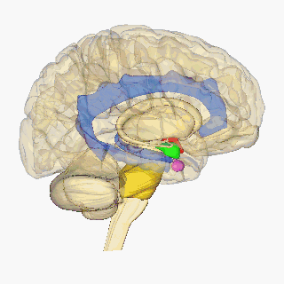

La neuroanatomía es el estudio de la estructura y la organización del sistema nervioso.1Se llama neuroanatomía comparada a la ciencia que analiza y compara los sistemas nerviosos de las diferentes especies. Desde los sistemas más simples hasta el de los mamíferos y el hombre. El primer registro escrito conocido de un estudio de la anatomía del cerebro humano es egipcio, el papiro de Edwin Smith. El siguiente desarrollo importante en neuroanatomía fue de unos mil años más tarde, cuando el griego Alcmeón determinó que el cerebro y no el corazón, como se creía, gobierna al cuerpo y recibe información de los sentidos. Uno de los fundadores de la neuroanatomía moderna fue el descubridor de la neurona, el español Santiago Ramón y Cajal, premio Nobel de medicina en 1906.
Se sitúa en la cavidad craneana y se continúa con la médula espinal a través del agujero occipital. Está rodeado por tres meninges. El encéfalo se divide en tres partes principales, estas son:
La base celular del sistema nervioso se compone de neuronas, células gliales, y matriz extracelular. Existen neuronas y células gliales de muchos tipos. Las neuronas son las células de procesamiento de información del sistema nervioso: generan la sensación de nuestro entorno, producen nuestros pensamientos y provocan nuestros movimientos. Se comunican entre sí por medio de señales eléctricas que recorren sus prolongaciones: los axones y las dentritas; las uniones interneuronales se llaman sinapsis y son estructuras complejas. Las células gliales mantienen la homeostasis, la producción de mielina, y brindan apoyo y protección a las neuronas del cerebro. Algunas células gliales (astrocitos) incluso pueden propagar las ondas de calcio intercelular por largas distancias en respuesta a la estimulación y liberar “gliotransmisores” en respuesta a cambios en la concentración de calcio. La matriz extracelular proporciona también apoyo a nivel molecular para las células del cerebro.